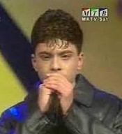

Тодор Тоше Проески рођен је 25.1.1981. године у Прилепу, а одрастао је у Крушеву, малом граду у Македонији. Тодор Проески је био један од најпознатијих македонских певача широм Југославије. Живео је у скромној породици коју су чинили он, његова шест година старија сестра Дора, мајка Доменика и отац Никола.
Као дете певао је у школском хору. Први наступ је имао са само 10 година када је на школској приредби отпевао "Аве Марија" и расплакао целу публику. Наредни наступ имао је са 11 година када је на фестивалу "Златно славејче" заједно са другарицом Емилијом извео песму "Јас и мојот дедо" на влашком језику.
|  |
На фестивалу "Макфест" у Штипу 1997. учествовао је са песмом "Пусти ме" и ту стекао велику популарност.
На фестивалу "Макфест" у Штипу 1997. учествовао је са песмом "Пусти ме" и ту стекао велику популарност. |
|
|
2000. године Тоше на националном избору за песму Евровизије осваја 3. место. Те године објављује и свој други албум "Синот Божији" на коме се налазило 9 песама. Такође, добија и Оскара популарности на простору бивших југословенских република.
У марту 2001. године је одржао 5 заредом распродатих концерата у Скопљу, а потом је одржао и први велики концерт изван Македоније, у београдском "Сава" центру. Затим одлази са групом великих македонских мужичара на турнеју у Аустралију. Наредне године Тоше започиње сарадњу са менаџерком Љиљаном Петровић и српском продукцијском кућом "BK Sound". У Атини снима нови албум "Ако ме погледаш у очи" који је објављен на македонском и српском језику. Наредне 2003. године Тоше побеđује на српском фестивалу "Беовизија" са песмом "Чија си". Такође, побеđује и на националном избору за песму Евровизије. 2004. године Тоше учествује на Евровизији у Турској са песмом "Life". Исте године, Тоше објављује албум "Дан за нас" на коме се налази 14 песама. Следеће, 2005. године издаје и пети по реду албум "Пратим те" који се сматра једним од најуспешнијих албума балканске музичке сцене. 2006. године у Македонији излази стрип "Супер Тоше" у коме се Тоше као суперјунак бори фантастичним гласом против непријатеља. Затим издаје албум "Божилак" на коме се налазило 14 македонских традиционалних песама, а такође и сингл "Срце није камен". Следеће године снима дует са Антонијом Шолом "Волим осмех твој". За дан заљубљених одржао је концерт у Београду у препуној арени. У августу издаје и последњи албум "Игра без граница" који је у року од само месец дана достигао златан тираж у Македонији, Србији, Словенији и Хрватској. Свој последњи концерт одржао је 5. октобра на градском стадиону у Скопљу. То је требао да буде почетак његове велике турнеје по бившој Југославији. 15. октобра 2007. даје свој последњи интервју за емисију "Вртелешка".
Тоше је починуо 16. октобра 2007. године на аутопуту код Нове Грдишке са само 26 година.
17. октобра Тоше је сахрањен у свом родном граду Крушеву. Тај дан проглашен је даном жалости у Македонији. Постхумно му је додељена награда за животно дело и титула почасног грађанина Македоније.